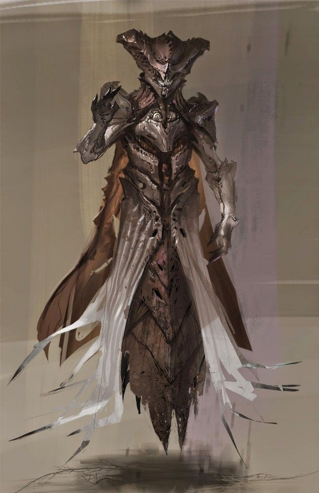
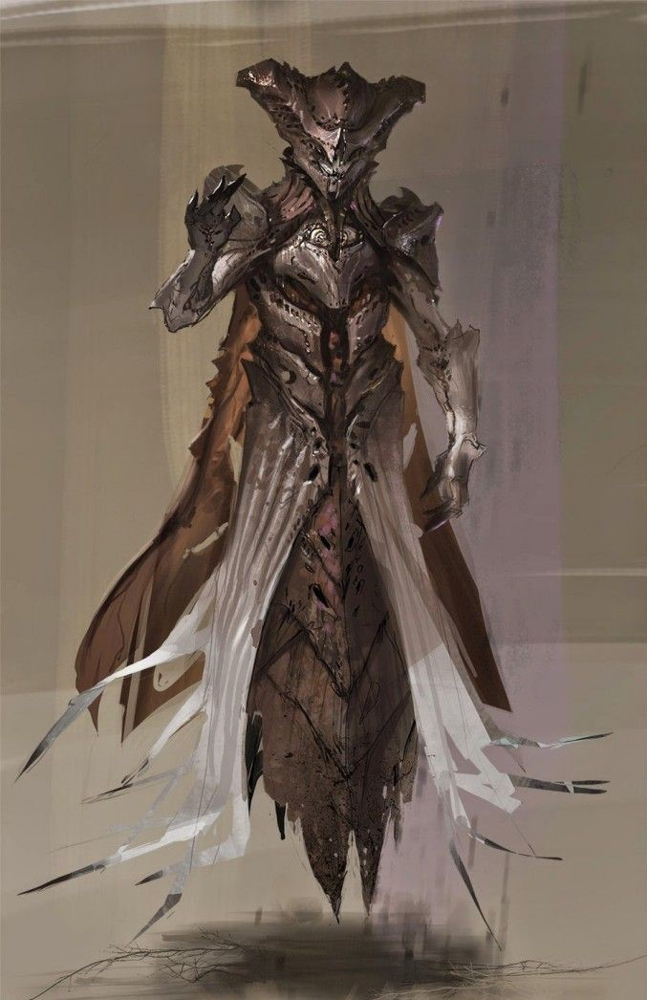

Hierarquia
Escravos
Selvagens e destemidos, Escravos são uma praga no campo de batalha. Enxames destas criaturas distorcidas são movidos por uma fúria desenfreada. De todos os horrores nascidos da perversão da Colmeia, eles são os mais baixos.
Acólitos
Seria um erro enxergar os Acólitos da Colmeia como soldados de infantaria. A Colmeia não é só um exército, e sim uma força sombria em ascensão. Esta força é feita de crença e terror, e seus Acólitos são os instrumentos desse terror, sedentos para cometer as atrocidades que os levarão à ascensão.
Cavaleiros
O Cavaleiro é uma fortaleza galopante e urrante - o primeiro e mais zeloso defensor da Colmeia. Séculos de batalha fortaleceram as protusões ossudas de seu corpo, tornando-as duras como ferro de relíquia. Essa defesa só é melhorada com a magia da Colmeia que os Cavaleiros utilizam para invocar escudos de uma força ardente.
Ogros
Equipados da feitiçaria da Colmeia, Ogros são abominações de carne e ódio enviadas dos mais profundos túneis da Colmeia como motores destrutivos. Contos apócrifos sugerem que Ogros sofrem terríveis transformações em seu crescimento - rituais agonizantes que os recompensam com força e astúcia.
Feiticeira
A Feiticeira é o bisturi com o qual a Colmeia disseca o universo. Um pesadelo de trapos e ossos, ela se esconde em treva e fogo, dissecando e experimentando com tudo que cai em suas garras.
Oryx, O Rei dos Possuídos

Oryx, o Rei dos Possuídos, possuindo bilhões de anos e nascido como Aurash e antigamente conhecido como Auryx (que significa "Longo Pensamento"), é o soberano do Trono do Ósmio, o Deus-Rei da Colmeia e mestre dos Possuídos. Renascido da própria escuridão através de um pacto perverso com o maior Vermes do Fundamento, Oryx é o fundador da raça da colmeia, ao lado de suas irmãs e outras divindades, Savathûn, a Rainha das Bruxas e Xivu Arath, Deus da Guerra, e a fonte de seu terrível poder. De todos os deuses da Colmeia, ele sozinho detém o poder de dobrar outras raças à sua vontade.

Savathûn, a Bruxa Rainha
Savathûn, a Bruxa Rainha, anteriormente conhecida como Sathona, é uma deusa da Colmeia e irmã de Xivu Arath, Deus da Guerra e Oryx, o Rei dos Possuídos. Juntamente com seus dois irmãos, ela foi a progenitora das espécies contemporâneas da Colmeia e um de seus principais deuses, tendo feito um pacto com os Vermes do Fundamento. Ela é levada a compreender os segredos mais profundos do universo e ganha poder a partir do engano e da confusão daqueles que procuram compreender seus esquemas insondáveis.

No entanto, seus verdadeiros objetivos foram revelados para minar a Testemunha e seus objetivos de realizar a Forma Final, trabalhando sua própria agenda secreta por dentro para evitar a extinção da humanidade durante o Colapso e para proteger e preservar o Viajante a todo custo. Por suas ações, ela renasceria como a primeira Portadora da Luz da Colmeia, com Immaru em parceria como seu Fantasma, com os dois juntos criando a Colmeia Luzente como seu próprio exército da colmeia que empunham a Luz.

Xivu Arath, a Deusa da Guerra
Xivu Arath, Deus da Guerra, anteriormente conhecido como Xi Ro, é uma deusa da Colmeia e irmã mais nova de Savathûn, a Rainha Bruxa e Oryx, o Rei dos Possuídos. Juntamente com seus dois irmãos, ela foi a progenitora das espécies contemporâneas da Colmeia e um de seus principais deuses, tendo feito um pacto com os Vermes do Fundamento. Ela está motivada a se tornar a guerreira mais poderosa do universo, e sua influência está presente onde quer que ocorra um conflito armado.
 Oryx, o Rei dos Possuídos, possuindo bilhões de anos e nascido como Aurash e antigamente conhecido como Auryx (que significa "Longo Pensamento"), é o soberano do Trono do Ósmio, o Deus-Rei da Colmeia e mestre dos Possuídos. Renascido da própria escuridão através de um pacto perverso com o maior Vermes do Fundamento, Oryx é o fundador da raça da colmeia, ao lado de suas irmãs e outras divindades, Savathûn, a Rainha das Bruxas e Xivu Arath, Deus da Guerra, e a fonte de seu terrível poder. De todos os deuses da Colmeia, ele sozinho detém o poder de dobrar outras raças à sua vontade.
Oryx, o Rei dos Possuídos, possuindo bilhões de anos e nascido como Aurash e antigamente conhecido como Auryx (que significa "Longo Pensamento"), é o soberano do Trono do Ósmio, o Deus-Rei da Colmeia e mestre dos Possuídos. Renascido da própria escuridão através de um pacto perverso com o maior Vermes do Fundamento, Oryx é o fundador da raça da colmeia, ao lado de suas irmãs e outras divindades, Savathûn, a Rainha das Bruxas e Xivu Arath, Deus da Guerra, e a fonte de seu terrível poder. De todos os deuses da Colmeia, ele sozinho detém o poder de dobrar outras raças à sua vontade.

 No entanto, seus verdadeiros objetivos foram revelados para minar a Testemunha e seus objetivos de realizar a Forma Final, trabalhando sua própria agenda secreta por dentro para evitar a extinção da humanidade durante o Colapso e para proteger e preservar o Viajante a todo custo. Por suas ações, ela renasceria como a primeira Portadora da Luz da Colmeia, com Immaru em parceria como seu Fantasma, com os dois juntos criando a Colmeia Luzente como seu próprio exército da colmeia que empunham a Luz.
No entanto, seus verdadeiros objetivos foram revelados para minar a Testemunha e seus objetivos de realizar a Forma Final, trabalhando sua própria agenda secreta por dentro para evitar a extinção da humanidade durante o Colapso e para proteger e preservar o Viajante a todo custo. Por suas ações, ela renasceria como a primeira Portadora da Luz da Colmeia, com Immaru em parceria como seu Fantasma, com os dois juntos criando a Colmeia Luzente como seu próprio exército da colmeia que empunham a Luz.


 
